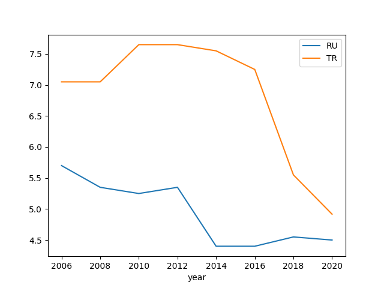
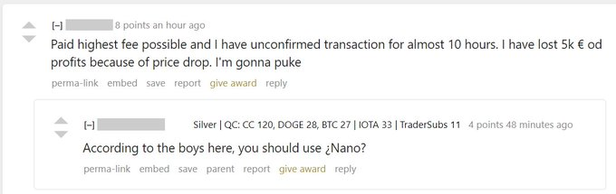

Week 18
"@RoryVanLoo
'The New Gatekeepers' is up. It shows how the government increasingly requires giants like Facebook, Citibank, Exxon, & Gilead to regulate smaller businesses"
Hydrogen Industry: The Dawning Of The #Hydrogen #Economy https://t.co/WD8L1rYcWX
— BayoTech On-Site Hydrogen Generation (@H2Bayo) May 1, 2020
The three UFO videos
So this thing basically runs on its own - making energy out of thin air.. How is this not a replacement for the current way we generate energy?
"A solar-powered hydrogen station has been built in the Japanese town of Namie, which can power 560 fuel-cell cars a day"
St Petersburg University Students Develop a #Hydrogen Fuel Cell to Replace Lithium-Ion Batteries--This new #fuelcell is expected to be 30% cheaper“ and uses an innovative nanostructured nickel mesh as a catalyst--https://t.co/6MuEsy2x4i #hydrogennow #fuelcells #zeroemissions #h2 pic.twitter.com/wLqFBBDRC9
— FuelCellsWorks (@fuelcellsworks) May 1, 2020
Looks fun
GOOD NEWS guys, not ALL the #sports are canceled!
— Elizabeth Withey (@lizwithey) April 30, 2020
But: is this a game, a manly duel, or a bad romance? #bunnyhop pic.twitter.com/t4KRhi5osc
You got that backwards
"Paraphrasing: the arriving ppl from Central As changed Anatolia"
--
Another dataset on democracies. BTI Transformation Index that evaluates aspects of governance for selected countries is updated for 2020.
Data on Downloads. I looked at TR vs RU (using the Stata file),
import pandas as pd
df = pd.read_stata('BTI 2006-2020.dta')
df = df.set_index('year')
df1 = df[df.country == 'Russia'].dem_stat
df2 = df[df.country == 'Turkey'].dem_stat
df3 = pd.concat([df1,df2],axis=1)
df3.columns = ['RU','TR']
df3.plot()
plt.savefig('bti.png')

TR approached RU values lately, major degradation. Still better than RU but these ppl spent decades under one-party state while TR did not. Shouldn't the difference be higher?
There are some interesting columns in there,
print (list(df.columns))
['country', 'country_code', 'region', 'rank_stat_ind',
'stat_ind', 'rank_dem_stat', 'dem_stat', 'stateness', 'monopoly',
'identity', 'no_dogmas', 'admin', 'pol_part', 'elect', 'power',
'assembly', 'express', 'ruleoflaw', 'separation', 'judiciary',
'prosecution', 'civ_rights', 'stab_dem', 'perf_dem', 'com_dem',
'integ', 'party_sys', 'int_group', 'approv_dem', 'soc_cap',
'rank_econ_stat', 'econ_stat', 'level_development', 'barriers',
'market', 'compet', 'comp_pol', 'for_trade', 'bank', 'stab_econ',
'infl', 'macro_stab', 'priv_prop', 'prop_rights', 'priv_ent',
'welfare', 'safety_nets', 'equal', 'perf_econ', 'output', 'sustain',
'envir', 'edu', 'rank_gov_ind', 'gov_ind', 'level_diff', 'constr',
'civil_trad', 'conflict_intens', 'GNI', 'UN_edu', 'state_rol',
'gov_perf', 'steering', 'priority', 'implement', 'learning',
'efficiency', 'assets', 'coord', 'anti_corrupt', 'consens', 'goals',
'veto', 'cleavage', 'civil_part', 'recon', 'int_coop', 'use_support',
'cred', 'reg_coop', 'trend_dem', 'trend_econ', 'trend_gov',
'core_stateness', 'state_failure', 'pol_sys', 'cat_stat_ind',
'cat_dem_stat', 'cat_trend_dem', 'cat_econ_stat', 'cat_trend_econ',
'cat_gov_ind', 'cat_trend_gov', 'cat_level_diff', 'stateness_cat',
'pol_part_cat', 'ruleoflaw_cat', 'stab_dem_cat', 'integ_cat',
'level_development_cat', 'market_cat', 'stab_econ_cat',
'priv_prop_cat', 'welfare_cat', 'perf_econ_cat', 'sustain_cat',
'level_diff_cat', 'steering_cat', 'efficiency_cat', 'consens_cat',
'int_coop_cat']
judiciary? prop_right? Looks interesting.
This dataset can be useful for researchers. There is a codebook describing all the columns.
$DGB vs $NANO https://t.co/fJcMc6XYHJ pic.twitter.com/mgCNDUwE7L
— IdealFog (@IdealFog) April 27, 2020
21 USC §§331, 333, 343(g) & 21 CFR §133.154 make it a federal crime to sell high-moisture jack cheese if it isn't moist enough, but not too moist.
— A Crime a Day (@CrimeADay) May 1, 2020
There is data from Quandl on this but time series stops at 2018 for some reason. Ideally I'd like to get it from them.
World oil production, from IEA
I guess data for production before April are real, but the rest is
projection. It'd be great to supply data as one CSV, and a CSV per
concept, like world-production.csv with simple format so ppl dont
have to dig through the cells like I did.
# Unit million bbls per day
import pandas as pd
df = pd.read_excel('/tmp/Fix6.xlsx')
arr = np.array(df)[25:50,3:5]
df2 = pd.DataFrame(arr)
df2.columns = ['date','oil']
df2['oil'] = df2.oil.astype(float)
df2['date'] = pd.to_datetime(df2.date)
df2 = df2.set_index('date')
print (df2.tail(8))
oil
date
2019-04-01 100.305388
2019-07-01 100.063067
2019-10-01 101.605337
2020-01-01 100.112812
2020-04-01 99.416189
2020-07-01 98.735324
2020-10-01 99.314964
2021-01-01 99.011546
Emacs! 👍
Typing.
— Dirk L. (@Dirque_L) May 1, 2020
Emacs.
Measure theory/Lebesgue integration. https://t.co/2wPIH8QJLI
BTW - who names a health insurance after one of the most deadliest snakes in the world? These ppl are psychopaths.
I was thinking M4A a good compromise solution for affordable and humane care but maybe UK method is even better (all health is managed directly by gov, reports to PM). Johnson keeps saying how they work hard to flatten the curve bcz "we had to prevent our NHS from being overwhelmed" - now that's a thing a politician can observe and optimize on, bcz it is directly under their purview in UK, which it turns out to be something useful for the populace at large. It is always good to have the right incentives in place... So pol can do things to protect NHS which in turn protects the public.
In US federal pols could be like ... meh.. I dont know.. there are bunch of hospitals out there and stuff, ppl can go there.. and like, fend for themselves? And we'll, like, save COBRA or something.. Just wave a hand and dismiss the problem bcz it doesnt effect any bureucracy they control directly.
I am not saying pols necessarily dont care for people, but in some instances it is not clear what to do about the problem, which gears to turn to cause change. For UK it is very simple - protect NHS. Expand NHS - if necessary. I am sure they have a lively research arm and can put out some good solutions - well, that's great. Help NHS to research, or coordinate research with others, unis so forth. The research results too can then be used directly, through NHS, wout this talk of patents, executive orders, etc. During the time of emergency it is beyond distasteful to hear of this stuff.
Finally.https://t.co/jBKwJh7Y63
— Governor Jay Inslee (@GovInslee) April 30, 2020
The tech sucks - get out, pronto #bitshitcoin

"Lebanese elites flee as banks come under attack"
Interesting in Trek universe the ugliest looking motherfuckers are an alien race of uber-capitalists.
The main constitutional doc for Ferrengis is "Ferrengi Bill of Opportunities" 😆😆😆
The fuel of the future has become the fuel of the now. LA is replacing a coal-fueled power plant with one that will run completely on #greenhydrogen: https://t.co/mfmg9euAwf #hydrogen #climate #sustainability
— Ballard Power (@BallardPwr) April 29, 2020
3.8 M more in jobless claims.
"@ddiamond
The first serious Covid-19 case in Minnesota was a 38-year-old Ironman athlete who nearly died and still relies on oxygen five weeks later"
"Bosch intends to position itself successfully in another growth market: As early as 2030, one in eight newly registered heavy trucks could be powered by a fuel cell thanks to work Bosch is undertaking with partner Ceres Power on stationary fuel cells.
These can supply buildings such as a computing centres with electricity and Bosch anticipates that the market for fuel cell power stations will be worth more than €20bn by 2030"

The populist right is far more real in advocating for actual people than any of the lefts grandstanding. https://t.co/2LssO5s65r
— Dylan Ratigan (@DylanRatigan) April 29, 2020
"@covidperspectiv
The Mayor of Los Angeles has announced that effective immediately, any LA resident can get tested for coronavirus, regardless of whether they have symptoms. The tests are free of charge. LA is the first major city in America to offer this"
"@LeeCamp
The US government is flying expensive fighter jets over US cities. They're not doing it to boost morale & thank workers. They're doing it to remind us that the Military Industrial Complex will keep gorging on our tax money while we're left to suffer through a pandemic"
"Walmart’s distribution centre in Gordonsville, Virginia ... operates a fleet of 273 hydrogen fuel cell forklifts"
Hah. Very partisan, colorful history. And former pharma lobbyst - of course.
"After law school [HHS Sec Azar] served as a law clerk under late Supreme Court Justice Antonin Scalia... Azar moved on to work for Kenneth Starr as an Associate Independent Counsel from 1994 to 1996, where he primarily worked on the Whitewater investigation... Azar was on [W's] legal team during the contentious Florida recount case following the 2000 presidential election"
Well - the bad effects can stil stick on the incumbent. Think of election 1980, Carter vs Reagan - the hostage crisis at the time was too "external", there were gas lines, .. due to Iran, so external again..? But Carter lost. -8% GDP growth, net popularity -21%!
"But the econ crisis was the effect of something external"
Q1 GDP growth 0.32% YoY, -4.78% QoQ annualized. 😶
Trump's net approval is down to its abysmal low again, at -10%. If this situation persists for Q2, even a sock puppet will win as a challenger.
byeeeeeeeeeeeeeeeee https://t.co/7VHsTLHXNo
— Dr Matt Cole (@MattColeWorks) April 29, 2020
"The University of Queensland's COVID-19 vaccine has shown in pre-clinical tests it can raise high levels of antibodies that can neutralise the virus.
The university's project co-leader Professor Paul Young said the results were an excellent indication the vaccine worked as expected"
$NANO is THE fastest, decentralized cryptocurrency and it DOESN'T have fees. pic.twitter.com/ZLGdT8KY4o
— CoinMoon🌎🌍🌏 (@CoinMoon5) April 29, 2020
"Massive project gets green light after securing $300m investment in Australia-Perth"
the plot of every single episode of star trek ever https://t.co/ch4UyEYtXl
— Tim Maughan (@timmaughan) April 28, 2020
"@CMastication
If you’re building an API for analytical data I have a secret for you: the answer is CSVs, not the goddamn ridiculous hierarchical restful piece of bullshit you built"
I dont know.. 🤔 sounds suggestive to me..
'Oh, I like it a lot!'
Said the Cat in the Hat
To the fish in the pot
Daam. What's next? Cat in a Hat?
"Alaska school board removed five famous — but allegedly 'controversial' — books from district classrooms ... 'I Know Why the Caged Bird Sings' by Maya Angelou, 'Catch-22' by Joseph Heller, 'The Things They Carried' by Tim O'Brien, 'The Great Gatsby' by F. Scott Fitzgerald, and 'Invisible Man' by Ralph Ellison were all taken off an approved list...
'If I were to read these in a corporate environment, in an office environment, I would be dragged into EO,' an equal opportunity complaint proceeding, Hart said....
"@natashalennard
Based on mainstream news coverage alone you’d likely never know that organizers and tenants in New York are preparing the largest coordinated rent strike in nearly a century, to begin on May 1"
New breakfast regime going well, almonds, walnuts, dried apricot, etc.. Extremely durable stuff. Tested bags of it in camp gear for weeks, shit wont go bad. I can imagine going whole day on such breakf, in outdoor conditions.
Wow
"@TheWorkshyFop
Peasants didn't 'bargain for better pay and conditions' after the plague, they got them by killing tax collectors, executing the chancellor, and burning down the Savoy"
BEVs - what a moronic f-ing tech.. Unbelievable it even came this far.
"Earlier this year, BMW announced the next generation of its hydrogen fuel cell drivetrain, and casually mentioned that real world tests would begin in the next couple of years.
For those drivers, hydrogen cars could be the easy answer, as fueling is pretty. In the UK, industry bodies estimate that some 40% of households don’t have access to off-street parking to charge EVs.
For those drivers, hydrogen cars could be the easy answer as fueling is pretty much the exact same process as for a gasoline car"
Researchers, led by scientists from @NorthwesternU, say they have developed a metallic sponge-like material that’s capable of storing greater quantities of #HydrogenNow at much lower — and safer — pressures when compared to conventional tanks https://t.co/rwTqABhzCG.
— IEA Hydrogen (@IEA_Hydrogen) April 28, 2020
"@aaronstein1
Russia has offloaded the management of HTS to Ankara, a cost free outcome of Sochi 2.0. Still in wait and see mode, but this is quite the pickle Ankara now finds itself in"
"@Jkylebass
The Controversial Experiments and Wuhan Lab Suspected of Starting the Coronavirus Pandemic - US Defense Intelligence Agency"
"@fuelcellsworks
Hyosung & Linde Group Sign Agreement to Build the World’s Biggest Liquid Hydrogen Plant-Plant will have an annual capacity of 13,000 tons of liquid #hydrogen, enough to fuel 100,000"
The Expanse last season sucked. They shouldn't have saved this show (almost got canceled, last year)
Wolfenstein 3D render loop in pure hardware! No CPU, no instruction pointer, no opcodes, only wires and flip-flops. Here runs on a Mojo V3 board (Xilinx Spartan 6) + SDRAM. Reading @fabynou black books while learning about #FPGA could only lead to this ;-)
— Sylvain Lefebvre (@sylefeb) April 27, 2020
(1/n) pic.twitter.com/k70Nz5t3Iz
With batteries not powerful enough for at least 30 percent of bus routes our green hydrogen buses are the practical option for long ranges. Up to 3,000 of our zero-emission hydrogen buses could take to the road in the next few years #hydrogen #wecantwait https://t.co/3XoP2zgRPm
— RyseHydrogen #wecantwait (@RyseHydrogen) April 28, 2020
"@zacharylipton
A relative's acct got hacked on Facebook today. Just 2-3 messages (trying to seem innocuous) left me 99.9% sure the account was cracked. Googled the message =>corroborating it's a known scam =>damn near 100% sure. Super simple reasoning yet strangely beyond what ML does reliably"
The Volvo Group and Daimler Truck AG form joint venture for large-scale production of fuel cells. https://t.co/zf9Rvkv90f#fuelcell #trucks #trucking
— Keith Malone (@ANativeAngeleno) April 27, 2020
To be clear: I haven't filed anything. I authorized a letter of interest that was sent on my behalf to the Greens and I'm testing the waters for Green Party nomination. I'm an independent. I'm not a Democrat or a Republican because I know they're not the solution.
— Jesse Ventura (@GovJVentura) April 27, 2020
Interesting they thought there'd still be waiters in the future
PHOTO OF THE DAY. A vision of the future from a German Magazine (1930). pic.twitter.com/DpeOy6NQ6B
— Professor Frank McDonough (@FXMC1957) April 27, 2020
Germany: Gas Pipeline Operator OGE Plans Huge Hydrogen Network--"Up to now we have been able to add up to two percent #hydrogen. The next step would be to switch to 100 percent hydrogen directly on certain lines"--https://t.co/zlXhZp7uRh #hydrogennow #decarbonise #zeroemissions pic.twitter.com/tn7HZwoDfl
— FuelCellsWorks (@fuelcellsworks) April 27, 2020
German start-up #HoellerElectrolyser has one clear goal: #greenhydrogen for less than €4 per kilogram.#H2View #hydrogenhttps://t.co/X3orFz2YaT
— H2 View (@h2_view) April 27, 2020
Isaac Ben-Israel is an Israeli going around saying the pandemic will end in 70 days. He has a "paper" in Hebrew (I read Hebrew). Below is one of the graphs on which he is basing his prediction.
— Lior Pachter (@lpachter) April 27, 2020
HE FIT A SIXTH ORDER POLYNOMIAL TO THE DATA
😱😱😱😱😱😱
(c=2E21 😱) pic.twitter.com/N7tKmoHBk0
"@passtrans
Plans for a UK-built, 3,000-strong hydrogen bus fleet across the country, have been revealed today by Wrightbus owner Jo Bamford"
"The death toll from coronavirus may be almost 60 per cent higher than reported in official counts, according to an FT analysis of overall fatalities during the pandemic in 14 countries.
Mortality statistics show 122,000 deaths in excess of normal levels across these locations, considerably higher than the 77,000 official Covid-19 deaths reported for the same places and time periods.
If the same level of under-reporting observed in these countries was happening worldwide, the global Covid-19 death toll would rise from the current official total of 201,000 to as high as 318,000"
The company before last spent all their time writing wrappers for AWS tools
— Present (@shoecatladder) April 26, 2020
Solving a debt & leverage problem with more debt doesn't work https://t.co/IVi9K4CZUY
— Keith McCullough (@KeithMcCullough) April 26, 2020
"Now, with colleges shuttered, revenues reduced, endowment investments plunging, and the added struggle of shifting from physical to virtual education, Moody’s has downgraded the entire sector to negative from stable. The American Council on Education believes revenues in higher education will decline by $23bn over the next academic year"
I bet momentum trading strategies did well for so long bcz chasing the FED paid off handsomely. That's what these things do, go after the herd, and FED created the perfect trend to follow.
i haven’t spent my $1200 yet
— beth (@bethbourdon) April 26, 2020
"@TheBubbleBubble
Believe it or not, the U.S. student loan bubble temporarily lowered the unemployment rate: many people who couldn't find jobs after the Great Recession simply took on a ton of student loans and went back to school. Voilà - they no longer counted as unemployed! It's magic!"
The NBER paper
"An NBER paper issued last year concluded that changes to federal student loans are more than sufficient to explain tuition increases at private nonprofit colleges...
Unlike most other student loan programs, PLUS loans are not capped—parents may borrow up to the cost of attendance, which is determined by the college. This creates incentives for colleges to increase student charges, since the federal government will make sure all eligible parents have access to the money"
Of course, David Hewlett. He called ZPM Zed-PM!
Go ZED! Good job.
Which actor is from Canada with some accent so I can half-jokingly mock the accent and congratulate?
Canada!
Canadians are receiving $2000/month and their GDP per capita is about 2/3 of ours. So when you're struggling to pay rent remember - it's not that they couldn't help us more, it's that they chose not to.
— Albert Lee For Congress 🌹 (@AlbertLee2020) April 26, 2020
"@adam_tooze
If Germany borrows money on capital markets, including from wealthy Italians, and then channels that money to Italy by way of the EU budget what does it amount to? A eurobond but one controlled by Germany! Great from @KeineWunder"
"[T]here is another viewpoint [different from electric grids] from which these possible new electric-power-demand-boosting developments do not look such good news. It’s based on a rival assessment of what makes sense in terms of meeting energy needs — the use of gas as an energy vector. This option is claimed to be more efficient and less costly than electricity for heating, and possibly for other purposes.
It is certainly easier to transmit gas with lower energy losses. And it can be stored, unlike electricity"
Yes some countries in fact do not allow free camping. This needs to change.
"[Autotranslated] According to the World Bank, over 77 percent of people in Germany live in cities. And these cities don't offer enough space for everyone. If the Germans who love to travel stay in the country this summer, .. there will be even less free terrain left here, the double arm length will be a distant dream. Nature waits in front of the city: forest and agriculture make up over 80 percent of land use in Germany.
The townspeople just have to go outside. Not to the eternally the same and soon overcrowded destinations such as Bastei Bridge, Drachenfels or the Travemünder Ostseestrand, but in the nameless and contagious forest, in the Weserbergland, the Elfringhauser Switzerland or the Fläming.
It is therefore necessary to allow wild camping in the country. The Scandinavian right of public could serve as a model: The allemansrätt , as it is called in Sweden, not only allows free access to nature - this is also known as the "right of access" in Germany. It also allows camping in the wild and only imposes restrictions, such as a minimum distance from the sleeping area to houses"
Can we all agree on how invasive getting someone's phone number is?
— crummy (@crummysaint) April 26, 2020
Shit's fucking oppressive.